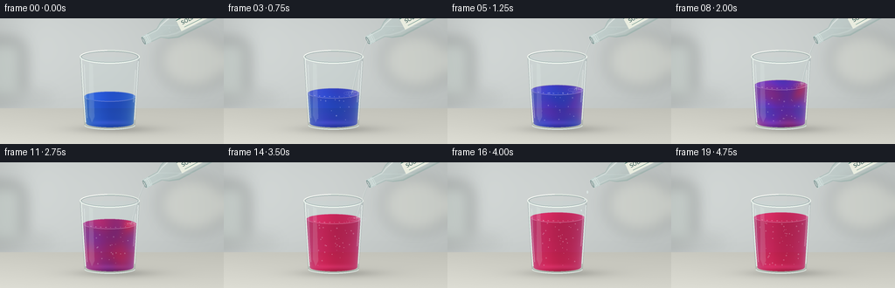
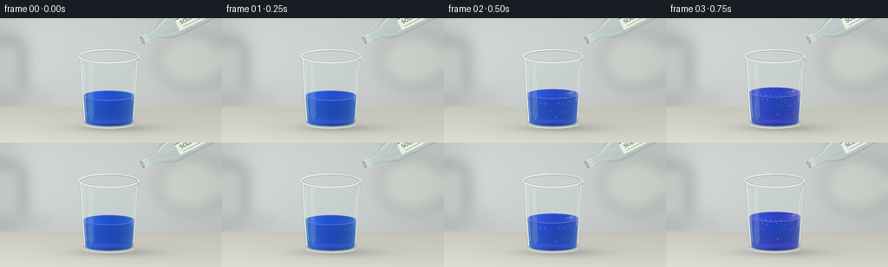

CODING AGENTS AS PIXEL WORLD MODELS
traex/GPT-6.1-Sol · phygen_148
点击播放 · 原生 RGB 像素
逐轮保存的候选
回放视频、检查图与代码变化。
每份候选均可单独播放。实际图片检查记录在下方工具轨迹中。
候选 01播放与检查图
点击播放 · 原生 RGB 像素


展开代码变化
--- 上一保存版本
+++ 本次保存版本
@@ -0,0 +1,237 @@
+from pathlib import Path
+import math
+import numpy as np
+from PIL import Image, ImageDraw, ImageFont, ImageFilter
+import artifact_io
+
+ROOT=Path(__file__).resolve().parent
+W,H,S=256,144,4
+w,h=W*S,H*S
+Y,X=np.mgrid[0:h,0:w].astype(np.float32)/S
+rng=np.random.default_rng(148)
+
+def rgb(im): return np.asarray(im).astype(np.float32)/255
+
+def blend(a,color,alpha):
+ alpha=np.clip(alpha,0,1)
+ if alpha.ndim==2: alpha=alpha[...,None]
+ return a*(1-alpha)+np.asarray(color)*alpha
+
+def ellipse(cx,cy,rx,ry): return ((X-cx)/rx)**2+((Y-cy)/ry)**2 <= 1
+
+def draw_scaled(im, fn):
+ d=ImageDraw.Draw(im)
+ fn(d)
+
+def line(d,points,fill,width=1): d.line([(round(x*S),round(y*S)) for x,y in points], fill=fill,width=max(1,round(width*S)),joint='curve')
+def ell(d,box,fill=None,outline=None,width=1): d.ellipse(tuple(round(z*S) for z in box),fill=fill,outline=outline,width=max(1,round(width*S)))
+
+# Soft-focus, daylight tabletop. Everything is constructed locally from geometry.
+vign=((X-123)/180)**2+((Y-53)/125)**2
+base=np.empty((h,w,3),np.float32)
+for i,c in enumerate([.78,.80,.795]): base[:,:,i]=c-.062*vign+.026*np.exp(-((X-74)/90)**2-((Y-20)/75)**2)
+wall=Y<103
+base+= .022*np.exp(-((X-42)/32)**2)[...,None]
+base+= .006*np.sin(X*.017)[...,None]
+# Out-of-focus reflections and a distant edge at left.
+bg=Image.fromarray(np.uint8(np.clip(base,0,1)*255))
+b=Image.new('RGBA',(w,h),(0,0,0,0)); d=ImageDraw.Draw(b)
+d.rounded_rectangle((int(-12*S),int(25*S),int(27*S),int(91*S)),radius=12*S,fill=(186,197,190,90))
+d.rectangle((0,int(87*S),int(58*S),int(96*S)),fill=(153,164,155,38))
+d.ellipse((int(181*S),int(16*S),int(260*S),int(81*S)),fill=(239,236,212,45))
+b=b.filter(ImageFilter.GaussianBlur(8*S)); bg=Image.alpha_composite(bg.convert('RGBA'),b).convert('RGB')
+base=rgb(bg)
+floor=(Y>=103).astype(float)
+fcol=np.empty_like(base)
+noise=rng.normal(0,.0012,(h,w))
+for k,c in enumerate([.79,.79,.755]): fcol[...,k]=c+.08*(Y-103)/42+noise-.035*(X/256)
+base=blend(base,fcol,floor)
+# Contact shadow and broad soft cast shadow beneath the glass.
+shadow=.16*np.exp(-((X-132)/42)**2-((Y-127)/4.3)**2)+.045*np.exp(-((X-146)/65)**2-((Y-127)/10)**2)
+base*=1-shadow[...,None]
+# The glass is a slightly tapered clear tumbler.
+cx=125.5; top=44.; bottom=121.8
+rad=34.3-(np.clip(Y,top,bottom)-top)*.063
+q=(X-cx)/rad
+outer=((Y>=top)&(Y<=bottom)&(abs(q)<=1))|ellipse(cx,bottom,29.4,6.2)
+# Interior and the circular base, slightly inset from the exterior walls.
+rin=rad-2.25
+qi=(X-cx)/rin
+inside=((Y>=top)&(Y<=120.5)&(abs(qi)<=1))|ellipse(cx,120.5,26.7,4.3)
+# stable refraction of the setting seen through an empty glass
+ix=np.clip(np.rint((cx+(X-cx)*(.96+.025*np.abs(q)))*S).astype(int),0,w-1)
+refr=base[np.arange(h)[:,None],ix]
+edge=np.exp(-((abs(q)-.97)/.038)**2)*outer
+bubble_data=[]
+for j in range(47):
+ bubble_data.append((rng.uniform(-.85,.85),rng.uniform(0,1),rng.uniform(.18,.63),rng.uniform(7,19)))
+# Font only used for the understated identifying bottle label.
+try: font=ImageFont.truetype('/usr/share/fonts/truetype/dejavu/DejaVuSans.ttf',6*S)
+except OSError: font=ImageFont.load_default()
+
+
+def bottle_layer(a,t):
+ # A clear soda bottle angled down into the glass, with its body cropped by the frame.
+ tilt=-.46-.045*math.sin(min(t,3.6)/3.6*math.pi)
+ p=np.array([164.5+1.3*math.sin(t*.4),25.3-.9*math.sin(t*.4)])
+ e=np.array([math.cos(tilt),math.sin(tilt)]); n=np.array([-e[1],e[0]])
+ ss=(X-p[0])*e[0]+(Y-p[1])*e[1]
+ qq=(X-p[0])*n[0]+(Y-p[1])*n[1]
+ # neck, shoulder, cylindrical body, curved heel
+ radius=np.interp(ss,[0,3,19,26,37,89,99,103],[5.1,5.3,5.7,10.7,14.8,14.8,12.3,0])
+ mask=(ss>=0)&(ss<=103)&(abs(qq)<=radius)
+ normalized=qq/np.maximum(radius,.1)
+ ix2=np.clip(np.rint((X+1.2*normalized)*S).astype(int),0,w-1)
+ iy2=np.clip(np.rint((Y+.55*normalized)*S).astype(int),0,h-1)
+ source=a[iy2,ix2]
+ glass=source*np.array([.94,.982,.975])+.025
+ a=blend(a,glass,mask*.76)
+ # Clear, almost full bottle. The faint gravity-horizontal air/water boundary and gas bubbles identify carbonation.
+ water=mask&(Y>8+1.5*t)&(ss>7)
+ a=blend(a,np.clip(a*np.array([.965,.982,.98])+.018,0,1),water*.55)
+ waterline=mask*np.exp(-((Y-(8+1.5*t))/.35)**2)
+ a=blend(a,[.84,.90,.89],waterline*.34)
+ edge_b=mask*np.exp(-((abs(normalized)-.94)/.07)**2)
+ a=blend(a,[.44,.58,.55],edge_b*.32)
+ highlight=mask*(.58*np.exp(-((normalized+.68)/.048)**2)+.19*np.exp(-((normalized-.61)/.062)**2))
+ a=blend(a,[.98,1.,.985],highlight)
+ im=Image.fromarray(np.uint8(np.clip(a,0,1)*255)).convert('RGBA')
+ layer=Image.new('RGBA',(w,h),(0,0,0,0)); d=ImageDraw.Draw(layer)
+ # Neck rings, with a visible elliptical open lip.
+ for pos in [0,2.0,4.2,6.0]:
+ coords=[]
+ for ang in np.linspace(0,2*math.pi,72):
+ v=p+e*(pos+1.2*math.cos(ang))+n*(5.2*math.sin(ang))
+ coords.append(tuple(v))
+ line(d,coords,(219,236,233,180),.5)
+ coords=[]
+ for ang in np.linspace(0,2*math.pi,70):
+ v=p+e*(-.3+1.0*math.cos(ang))+n*(4.4*math.sin(ang));coords.append(tuple(v))
+ line(d,coords,(77,114,111,150),.65)
+ for j in range(18):
+ s0=30+(j*17.3)%60; q0=-9+(j*4.51)%18
+ v=p+e*s0+n*(q0-(t*1.8)%4)
+ if v[1]>9+1.5*t:
+ r=.22+(j%3)*.075
+ ell(d,(v[0]-r,v[1]-r,v[0]+r,v[1]+r),outline=(246,255,252,120),width=.20)
+ im=Image.alpha_composite(im,layer)
+ # Small paper band, transformed with the bottle; restrained teal typography.
+ lab=Image.new('RGBA',(35*S,15*S),(238,241,227,233)); ld=ImageDraw.Draw(lab)
+ ld.line((0,1*S,35*S,1*S),fill=(87,130,122,255),width=1*S)
+ ld.text((4*S,3*S),'SODA',fill=(45,83,79,255),font=font)
+ ld.line((5*S,12*S,29*S,12*S),fill=(102,142,133,255),width=max(1,round(.4*S)))
+ lab=lab.rotate(-tilt*180/math.pi,resample=Image.Resampling.BICUBIC,expand=True)
+ center=p+e*61+n*2
+ im.alpha_composite(lab,(int(center[0]*S-lab.width/2),int(center[1]*S-lab.height/2)))
+ return rgb(im.convert('RGB')),p
+
+
+def render(frame):
+ t=frame/4
+ pour=max(0,min(1,(frame-1)/14))
+ # Less than half a glass of indicator becomes a little over two-thirds full.
+ level=89.5-26.5*pour
+ a=base.copy()
+ a=blend(a,refr*np.array([.977,.993,.996])+.012,outer*.64)
+ a=blend(a,[.39,.48,.47],edge*.22)
+ # Back rim and empty vessel reflections behind the fluid.
+ im=Image.fromarray(np.uint8(np.clip(a,0,1)*255)); d=ImageDraw.Draw(im)
+ d.arc(tuple(int(z*S) for z in [cx-34.3,top-7.7,cx+34.3,top+7.7]),180,360,fill=(234,241,232),width=round(1.1*S))
+ d.arc(tuple(int(z*S) for z in [cx-32.4,top-6.4,cx+32.4,top+6.4]),180,360,fill=(128,153,151),width=round(.55*S))
+ a=rgb(im)
+ sr=34.3-(level-top)*.063-2.25
+ surface=ellipse(cx,level,sr,5.7)
+ liquid=inside & ((Y>=level)|surface)
+ # Acidic soda first makes a reddish mixing plume near the stream, then the whole solution changes.
+ global_acid=np.clip((pour-.03)/.88,0,1)
+ wave=np.sin((Y-level)*.16+t*3.1)+.6*np.sin(X*.17-Y*.09-t*2)
+ plume=np.exp(-((X-(149- .30*(Y-level)+3*np.sin((Y-level)*.12+t)))/(4.2+max(0,t-.5)*2))**2)
+ depthfactor=np.exp(-np.maximum(0,Y-level)/max(11,9+25*pour))
+ local=np.clip(global_acid+.29*plume*depthfactor*math.sin(math.pi*min(pour,1))+.095*wave*math.sin(math.pi*global_acid),0,1)
+ blue=np.array([1.82,.94,.075]); violet=np.array([.74,1.54,.18]); red=np.array([.08,1.78,.85])
+ first=np.clip(local/.5,0,1)[...,None]; second=np.clip((local-.5)/.5,0,1)[...,None]
+ absorb=blue*(1-first)+violet*first
+ absorb=absorb*(1-second)+red*second
+ thickness=.38+.82*np.sqrt(np.maximum(0,1-qi**2))
+ light=.95+.09*np.exp(-((X-112)/12)**2)+.04*np.sin(Y*.065)
+ fluid=refr*np.exp(-absorb*thickness[...,None])*light[...,None]+.018
+ # Soft transmitted illumination and curved caustic near the foot.
+ caust=.10*np.exp(-((Y-119.5)/2.5)**2)*np.maximum(0,1-qi**2)
+ fluid+=caust[...,None]*np.array([.7,.45,.75])
+ a=blend(a,fluid,liquid*.97)
+ # Elliptical liquid surface, gently disturbed by the falling stream.
+ scol=fluid*1.14+.037
+ a=blend(a,scol,surface*.58)
+ im=Image.fromarray(np.uint8(np.clip(a,0,1)*255)).convert('RGBA')
+ o=Image.new('RGBA',(w,h),(0,0,0,0));d=ImageDraw.Draw(o)
+ # Back meniscus: narrow, wet bright edge.
+ men_col=(int(100+105*global_acid),int(125-57*global_acid),int(209-87*global_acid),165)
+ d.arc(tuple(round(z*S) for z in [cx-sr,level-5.7,cx+sr,level+5.7]),180,360,fill=men_col,width=round(.65*S))
+ d.arc(tuple(round(z*S) for z in [cx-sr,level-5.7,cx+sr,level+5.7]),2,166,fill=(230,207,228,125),width=round(.55*S))
+ # Effervescence rising through the fluid, with fine lit rims and tiny dark centers.
+ for j,(xx,phase,r,speed) in enumerate(bubble_data):
+ if frame<2 or (j>7+frame*2 and frame<17):continue
+ bh=119-level-4
+ by=118-((phase*bh+(t-.5)*speed)%bh)
+ bx=cx+xx*(34.3-(by-top)*.063-4)+.65*math.sin(t*2.1+j)
+ if not (level+2<by<119):continue
+ ell(d,(bx-r,by-r,bx+r,by+r),fill=(220,223,246,15),outline=(247,247,252,125),width=.17)
+ d.arc(tuple(round(z*S) for z in [bx-r,by-r,bx+r,by+r]),195,300,fill=(255,255,255,190),width=max(1,round(.20*S)))
+ # A thick glass foot and long glossy rectangular window reflections.
+ d.arc(tuple(round(z*S) for z in [cx-29.0,117.5,cx+29.0,127.6]),0,180,fill=(225,238,232,220),width=round(1.2*S))
+ d.arc(tuple(round(z*S) for z in [cx-27.3,118.7,cx+27.3,125.8]),0,180,fill=(137,161,154,140),width=round(.8*S))
+ line(d,[(93.0,45),(94.1,64),(95.4,90),(97.7,119)],(248,255,249,180),1.3)
+ line(d,[(96.2,53),(97.7,90),(99.4,114)],(244,254,252,95),.65)
+ line(d,[(157.9,49),(156.0,83),(153.7,116)],(250,255,253,170),.9)
+ line(d,[(154.9,59),(153.7,79),(152.6,96)],(249,255,251,55),1.5)
+ # Soft wide reflection band, mostly on the left wall.
+ d.polygon([(int(x*S),int(y*S)) for x,y in [(102,51),(106,53),(108,113),(105,119),(102,111)]],fill=(242,253,249,35))
+ # Front lip, two parallel highlights establishing the open glass.
+ d.arc(tuple(round(z*S) for z in [cx-34.3,top-7.7,cx+34.3,top+7.7]),0,180,fill=(244,251,244,235),width=round(1.15*S))
+ d.arc(tuple(round(z*S) for z in [cx-32.4,top-6.4,cx+32.4,top+6.4]),0,180,fill=(122,151,149,180),width=round(.45*S))
+ d.arc(tuple(round(z*S) for z in [cx-34.3,top-7.7,cx+34.3,top+7.7]),195,265,fill=(255,255,250,255),width=round(1.1*S))
+ im=Image.alpha_composite(im,o)
+ a,p=bottle_layer(rgb(im.convert('RGB')),t)
+ # The transparent jet is refractive rather than a white solid stripe.
+ active=2<=frame<=15
+ if active:
+ y0=p[1]+.35
+ dy=np.maximum(0,Y-y0)
+ pathx=p[0]-.49*dy/(1+dy/90)
+ wid=1.2+.40*np.sin(dy*.38-t*8)**2+.18*dy/50
+ dist=(X-pathx)/wid
+ jet=(Y>=y0)&(Y<=level+.8)&(abs(dist)<1)
+ ixx=np.clip(np.rint((X+dist*.75)*S).astype(int),0,w-1)
+ ja=a[np.arange(h)[:,None],ixx]*.91+.06
+ a=blend(a,ja,jet*.75)
+ hi=jet*(.54*np.exp(-((dist+.51)/.16)**2)+.25*np.exp(-((dist-.59)/.14)**2))
+ a=blend(a,[.97,.99,.985],hi)
+ dark=jet*np.exp(-((dist-.08)/.4)**2)*.13
+ a=blend(a,[.52,.66,.64],dark)
+ im=Image.fromarray(np.uint8(np.clip(a,0,1)*255)).convert('RGBA')
+ o=Image.new('RGBA',(w,h),(0,0,0,0));d=ImageDraw.Draw(o)
+ if active:
+ endx=p[0]-.49*(level-p[1])/(1+(level-p[1])/90)
+ for k in range(3):
+ rr=2.6+((t*6+k*2.7)%8)
+ ell(d,(endx-rr,level-rr*.26,endx+rr,level+rr*.26),outline=(239,236,247,83-k*13),width=.32)
+ for j in range(6):
+ ang=(j*2.4+t*2); r=.24+(j%3)*.1
+ bx=endx+math.sin(ang)*(2.2+j*.5);by=level-.2-math.cos(ang)**2*(1.1+j*.22)
+ ell(d,(bx-r,by-r,bx+r,by+r),outline=(255,255,255,170),width=.2)
+ elif frame==16:
+ for xx,yy,r in [(160,34,.85),(157,43,.63),(153,55,.5)]:
+ ell(d,(xx-r,yy-r*1.8,xx+r,yy+r*1.8),fill=(227,242,239,160),outline=(249,255,255,160),width=.25)
+ # A few scattered small carbonated bubbles at the surface, never an opaque foam cap.
+ if frame>=3:
+ for j in range(12):
+ bx=cx-22+(j*5.71)%45;by=level+3.9*math.sqrt(max(0,1-((bx-cx)/sr)**2))
+ r=.30+.16*(j%3)
+ ell(d,(bx-r,by-r*.64,bx+r,by+r*.64),outline=(255,245,253,120),width=.18)
+ im=Image.alpha_composite(im,o).convert('RGB')
+ return np.asarray(im.resize((W,H),Image.Resampling.LANCZOS),dtype=np.uint8)
+
+if __name__=='__main__':
+ frames=np.stack([render(i) for i in range(20)])
+ artifact_io.save(frames,ROOT)
+ print('Saved',frames.shape,frames.dtype,'to',ROOT)
可观测工具轨迹
实际执行的命令与返回图片。
命令 1exit 0
/bin/bash -lc "ls -la && cat prompt.txt && printf '\\n---RULES---\\n' && cat GENERATION_RULES.md && printf '\\n---SPEC---\\n' && cat task_spec.json"
命令 2exit 0
/bin/bash -lc 'cat artifact_io.py'
命令 3exit 0
/bin/bash -lc "cat > generate.py <<'PY'
from pathlib import Path
import math
import numpy as np
from PIL import Image, ImageDraw, ImageFont, ImageFilter
import artifact_io
ROOT=Path(__file__).resolve().parent
W,H,S=256,144,4
w,h=W*S,H*S
Y,X=np.mgrid[0:h,0:w].astype(np.float32)/S
rng=np.random.default_rng(148)
def rgb(im): return np.asarray(im).astype(np.float32)/255
def blend(a,color,alpha):
alpha=np.clip(alpha,0,1)
if alpha.ndim==2: alpha=alpha[...,None]
return a*(1-alpha)+np.asarray(color)*alpha
def ellipse(cx,cy,rx,ry): return ((X-cx)/rx)**2+((Y-cy)/ry)**2 <= 1
def draw_scaled(im, fn):
d=ImageDraw.Draw(im)
fn(d)
def line(d,points,fill,width=1): d.line([(round(x*S),round(y*S)) for x,y in points], fill=fill,width=max(1,round(width*S)),joint='curve')
def ell(d,box,fill=None,outline=None,width=1): d.ellipse(tuple(round(z*S) for z in box),fill=fill,outline=outline,width=max(1,round(width*S)))
# Soft-focus, daylight tabletop. Everything is constructed locally from geometry.
vign=((X-123)/180)**2+((Y-53)/125)**2
base=np.empty((h,w,3),np.float32)
for i,c in enumerate([.78,.80,.795]): base[:,:,i]=c-.062*vign+.026*np.exp(-((X-74)/90)**2-((Y-20)/75)**2)
wall=Y<103
base+= .022*np.exp(-((X-42)/32)**2)[...,None]
base+= .006*np.sin(X*.017)[...,None]
# Out-of-focus reflections and a distant edge at left.
bg=Image.fromarray(np.uint8(np.clip(base,0,1)*255))
b=Image.new('RGBA',(w,h),(0,0,0,0)); d=ImageDraw.Draw(b)
d.rounded_rectangle((int(-12*S),int(25*S),int(27*S),int(91*S)),radius=12*S,fill=(186,197,190,90))
d.rectangle((0,int(87*S),int(58*S),int(96*S)),fill=(153,164,155,38))
d.ellipse((int(181*S),int(16*S),int(260*S),int(81*S)),fill=(239,236,212,45))
b=b.filter(ImageFilter.GaussianBlur(8*S)); bg=Image.alpha_composite(bg.convert('RGBA'),b).convert('RGB')
base=rgb(bg)
floor=(Y>=103).astype(float)
fcol=np.empty_like(base)
noise=rng.normal(0,.0012,(h,w))
for k,c in enumerate([.79,.79,.755]): fcol[...,k]=c+.08*(Y-103)/42+noise-.035*(X/256)
base=blend(base,fcol,floor)
# Contact shadow and broad soft cast shadow beneath the glass.
shadow=.16*np.exp(-((X-132)/42)**2-((Y-127)/4.3)**2)+.045*np.exp(-((X-146)/65)**2-((Y-127)/10)**2)
base*=1-shadow[...,None]
# The glass is a slightly tapered clear tumbler.
cx=125.5; top=44.; bottom=121.8
rad=34.3-(np.clip(Y,top,bottom)-top)*.063
q=(X-cx)/rad
outer=((Y>=top)&(Y<=bottom)&(abs(q)<=1))|ellipse(cx,bottom,29.4,6.2)
# Interior and the circular base, slightly inset from the exterior walls.
rin=rad-2.25
qi=(X-cx)/rin
inside=((Y>=top)&(Y<=120.5)&(abs(qi)<=1))|ellipse(cx,120.5,26.7,4.3)
# stable refraction of the setting seen through an empty glass
ix=np.clip(np.rint((cx+(X-cx)*(.96+.025*np.abs(q)))*S).astype(int),0,w-1)
refr=base[np.arange(h)[:,None],ix]
edge=np.exp(-((abs(q)-.97)/.038)**2)*outer
bubble_data=[]
for j in range(47):
bubble_data.append((rng.uniform(-.85,.85),rng.uniform(0,1),rng.uniform(.18,.63),rng.uniform(7,19)))
# Font only used for the understated identifying bottle label.
try: font=ImageFont.truetype('/usr/share/fonts/truetype/dejavu/DejaVuSans.ttf',6*S)
except OSError: font=ImageFont.load_default()
def bottle_layer(a,t):
# A clear soda bottle angled down into the glass, with its body cropped by the frame.
tilt=-.46-.045*math.sin(min(t,3.6)/3.6*math.pi)
p=np.array([164.5+1.3*math.sin(t*.4),25.3-.9*math.sin(t*.4)])
e=np.array([math.cos(tilt),math.sin(tilt)]); n=np.array([-e[1],e[0]])
ss=(X-p[0])*e[0]+(Y-p[1])*e[1]
qq=(X-p[0])*n[0]+(Y-p[1])*n[1]
# neck, shoulder, cylindrical body, curved heel
radius=np.interp(ss,[0,3,19,26,37,89,99,103],[5.1,5.3,5.7,10.7,14.8,14.8,12.3,0])
mask=(ss>=0)&(ss<=103)&(abs(qq)<=radius)
normalized=qq/np.maximum(radius,.1)
ix2=np.clip(np.rint((X+1.2*normalized)*S).astype(int),0,w-1)
iy2=np.clip(np.rint((Y+.55*normalized)*S).astype(int),0,h-1)
source=a[iy2,ix2]
glass=source*np.array([.94,.982,.975])+.025
a=blend(a,glass,mask*.76)
# Clear, almost full bottle. The faint gravity-horizontal air/water boundary and gas bubbles identify carbonation.
water=mask&(Y>8+1.5*t)&(ss>7)
a=blend(a,np.clip(a*np.array([.965,.982,.98])+.018,0,1),water*.55)
waterline=mask*np.exp(-((Y-(8+1.5*t))/.35)**2)
a=blend(a,[.84,.90,.89],waterline*.34)
edge_b=mask*np.exp(-((abs(normalized)-.94)/.07)**2)
a=blend(a,[.44,.58,.55],edge_b*.32)
highlight=mask*(.58*np.exp(-((normalized+.68)/.048)**2)+.19*np.exp(-((normalized-.61)/.062)**2))
a=blend(a,[.98,1.,.985],highlight)
im=Image.fromarray(np.uint8(np.clip(a,0,1)*255)).convert('RGBA')
layer=Image.new('RGBA',(w,h),(0,0,0,0)); d=ImageDraw.Draw(layer)
# Neck rings, with a visible elliptical open lip.
for pos in [0,2.0,4.2,6.0]:
coords=[]
for ang in np.linspace(0,2*math.pi,72):
v=p+e*(pos+1.2*math.cos(ang))+n*(5.2*math.sin(ang))
coords.append(tuple(v))
line(d,coords,(219,236,233,180),.5)
coords=[]
for ang in np.linspace(0,2*math.pi,70):
v=p+e*(-.3+1.0*math.cos(ang))+n*(4.4*math.sin(ang));coords.append(tuple(v))
line(d,coords,(77,114,111,150),.65)
for j in range(18):
s0=30+(j*17.3)%60; q0=-9+(j*4.51)%18
v=p+e*s0+n*(q0-(t*1.8)%4)
if v[1]>9+1.5*t:
r=.22+(j%3)*.075
ell(d,(v[0]-r,v[1]-r,v[0]+r,v[1]+r),outline=(246,255,252,120),width=.20)
im=Image.alpha_composite(im,layer)
# Small paper band, transformed with the bottle; restrained teal typography.
lab=Image.new('RGBA',(35*S,15*S),(238,241,227,233)); ld=ImageDraw.Draw(lab)
ld.line((0,1*S,35*S,1*S),fill=(87,130,122,255),width=1*S)
ld.text((4*S,3*S),'SODA',fill=(45,83,79,255),font=font)
ld.line((5*S,12*S,29*S,12*S),fill=(102,142,133,255),width=max(1,round(.4*S)))
lab=lab.rotate(-tilt*180/math.pi,resample=Image.Resampling.BICUBIC,expand=True)
center=p+e*61+n*2
im.alpha_composite(lab,(int(center[0]*S-lab.width/2),int(center[1]*S-lab.height/2)))
return rgb(im.convert('RGB')),p
def render(frame):
t=frame/4
pour=max(0,min(1,(frame-1)/14))
# Less than half a glass of indicator becomes a little over two-thirds full.
level=89.5-26.5*pour
a=base.copy()
a=blend(a,refr*np.array([.977,.993,.996])+.012,outer*.64)
a=blend(a,[.39,.48,.47],edge*.22)
# Back rim and empty vessel reflections behind the fluid.
im=Image.fromarray(np.uint8(np.clip(a,0,1)*255)); d=ImageDraw.Draw(im)
d.arc(tuple(int(z*S) for z in [cx-34.3,top-7.7,cx+34.3,top+7.7]),180,360,fill=(234,241,232),width=round(1.1*S))
d.arc(tuple(int(z*S) for z in [cx-32.4,top-6.4,cx+32.4,top+6.4]),180,360,fill=(128,153,151),width=round(.55*S))
a=rgb(im)
sr=34.3-(level-top)*.063-2.25
surface=ellipse(cx,level,sr,5.7)
liquid=inside & ((Y>=level)|surface)
# Acidic soda first makes a reddish mixing plume near the stream, then the whole solution changes.
global_acid=np.clip((pour-.03)/.88,0,1)
wave=np.sin((Y-level)*.16+t*3.1)+.6*np.sin(X*.17-Y*.09-t*2)
plume=np.exp(-((X-(149- .30*(Y-level)+3*np.sin((Y-level)*.12+t)))/(4.2+max(0,t-.5)*2))**2)
depthfactor=np.exp(-np.maximum(0,Y-level)/max(11,9+25*pour))
local=np.clip(global_acid+.29*plume*depthfactor*math.sin(math.pi*min(pour,1))+.095*wave*math.sin(math.pi*global_acid),0,1)
blue=np.array([1.82,.94,.075]); violet=np.array([.74,1.54,.18]); red=np.array([.08,1.78,.85])
first=np.clip(local/.5,0,1)[...,None]; second=np.clip((local-.5)/.5,0,1)[...,None]
absorb=blue*(1-first)+violet*first
absorb=absorb*(1-second)+red*second
thickness=.38+.82*np.sqrt(np.maximum(0,1-qi**2))
light=.95+.09*np.exp(-((X-112)/12)**2)+.04*np.sin(Y*.065)
fluid=refr*np.exp(-absorb*thickness[...,None])*light[...,None]+.018
# Soft transmitted illumination and curved caustic near the foot.
caust=.10*np.exp(-((Y-119.5)/2.5)**2)*np.maximum(0,1-qi**2)
fluid+=caust[...,None]*np.array([.7,.45,.75])
a=blend(a,fluid,liquid*.97)
# Elliptical liquid surface, gently disturbed by the falling stream.
scol=fluid*1.14+.037
a=blend(a,scol,surface*.58)
im=Image.fromarray(np.uint8(np.clip(a,0,1)*255)).convert('RGBA')
o=Image.new('RGBA',(w,h),(0,0,0,0));d=ImageDraw.Draw(o)
# Back meniscus: narrow, wet bright edge.
men_col=(int(100+105*global_acid),int(125-57*global_acid),int(209-87*global_acid),165)
d.arc(tuple(round(z*S) for z in [cx-sr,level-5.7,cx+sr,level+5.7]),180,360,fill=men_col,width=round(.65*S))
d.arc(tuple(round(z*S) for z in [cx-sr,level-5.7,cx+sr,level+5.7]),2,166,fill=(230,207,228,125),width=round(.55*S))
# Effervescence rising through the fluid, with fine lit rims and tiny dark centers.
for j,(xx,phase,r,speed) in enumerate(bubble_data):
if frame<2 or (j>7+frame*2 and frame<17):continue
bh=119-level-4
by=118-((phase*bh+(t-.5)*speed)%bh)
bx=cx+xx*(34.3-(by-top)*.063-4)+.65*math.sin(t*2.1+j)
if not (level+2<by<119):continue
ell(d,(bx-r,by-r,bx+r,by+r),fill=(220,223,246,15),outline=(247,247,252,125),width=.17)
d.arc(tuple(round(z*S) for z in [bx-r,by-r,bx+r,by+r]),195,300,fill=(255,255,255,190),width=max(1,round(.20*S)))
# A thick glass foot and long glossy rectangular window reflections.
d.arc(tuple(round(z*S) for z in [cx-29.0,117.5,cx+29.0,127.6]),0,180,fill=(225,238,232,220),width=round(1.2*S))
d.arc(tuple(round(z*S) for z in [cx-27.3,118.7,cx+27.3,125.8]),0,180,fill=(137,161,154,140),width=round(.8*S))
line(d,[(93.0,45),(94.1,64),(95.4,90),(97.7,119)],(248,255,249,180),1.3)
line(d,[(96.2,53),(97.7,90),(99.4,114)],(244,254,252,95),.65)
line(d,[(157.9,49),(156.0,83),(153.7,116)],(250,255,253,170),.9)
line(d,[(154.9,59),(153.7,79),(152.6,96)],(249,255,251,55),1.5)
# Soft wide reflection band, mostly on the left wall.
d.polygon([(int(x*S),int(y*S)) for x,y in [(102,51),(106,53),(108,113),(105,119),(102,111)]],fill=(242,253,249,35))
# Front lip, two parallel highlights establishing the open glass.
d.arc(tuple(round(z*S) for z in [cx-34.3,top-7.7,cx+34.3,top+7.7]),0,180,fill=(244,251,244,235),width=round(1.15*S))
d.arc(tuple(round(z*S) for z in [cx-32.4,top-6.4,cx+32.4,top+6.4]),0,180,fill=(122,151,149,180),width=round(.45*S))
d.arc(tuple(round(z*S) for z in [cx-34.3,top-7.7,cx+34.3,top+7.7]),195,265,fill=(255,255,250,255),width=round(1.1*S))
im=Image.alpha_composite(im,o)
a,p=bottle_layer(rgb(im.convert('RGB')),t)
# The transparent jet is refractive rather than a white solid stripe.
active=2<=frame<=15
if active:
y0=p[1]+.35
dy=np.maximum(0,Y-y0)
pathx=p[0]-.49*dy/(1+dy/90)
wid=1.2+.40*np.sin(dy*.38-t*8)**2+.18*dy/50
dist=(X-pathx)/wid
jet=(Y>=y0)&(Y<=level+.8)&(abs(dist)<1)
ixx=np.clip(np.rint((X+dist*.75)*S).astype(int),0,w-1)
ja=a[np.arange(h)[:,None],ixx]*.91+.06
a=blend(a,ja,jet*.75)
hi=jet*(.54*np.exp(-((dist+.51)/.16)**2)+.25*np.exp(-((dist-.59)/.14)**2))
a=blend(a,[.97,.99,.985],hi)
dark=jet*np.exp(-((dist-.08)/.4)**2)*.13
a=blend(a,[.52,.66,.64],dark)
im=Image.fromarray(np.uint8(np.clip(a,0,1)*255)).convert('RGBA')
o=Image.new('RGBA',(w,h),(0,0,0,0));d=ImageDraw.Draw(o)
if active:
endx=p[0]-.49*(level-p[1])/(1+(level-p[1])/90)
for k in range(3):
rr=2.6+((t*6+k*2.7)%8)
ell(d,(endx-rr,level-rr*.26,endx+rr,level+rr*.26),outline=(239,236,247,83-k*13),width=.32)
for j in range(6):
ang=(j*2.4+t*2); r=.24+(j%3)*.1
bx=endx+math.sin(ang)*(2.2+j*.5);by=level-.2-math.cos(ang)**2*(1.1+j*.22)
ell(d,(bx-r,by-r,bx+r,by+r),outline=(255,255,255,170),width=.2)
elif frame==16:
for xx,yy,r in [(160,34,.85),(157,43,.63),(153,55,.5)]:
ell(d,(xx-r,yy-r*1.8,xx+r,yy+r*1.8),fill=(227,242,239,160),outline=(249,255,255,160),width=.25)
# A few scattered small carbonated bubbles at the surface, never an opaque foam cap.
if frame>=3:
for j in range(12):
bx=cx-22+(j*5.71)%45;by=level+3.9*math.sqrt(max(0,1-((bx-cx)/sr)**2))
r=.30+.16*(j%3)
ell(d,(bx-r,by-r*.64,bx+r,by+r*.64),outline=(255,245,253,120),width=.18)
im=Image.alpha_composite(im,o).convert('RGB')
return np.asarray(im.resize((W,H),Image.Resampling.LANCZOS),dtype=np.uint8)
if __name__=='__main__':
frames=np.stack([render(i) for i in range(20)])
artifact_io.save(frames,ROOT)
print('Saved',frames.shape,frames.dtype,'to',ROOT)
PY
python generate.py"命令 4exit 0
/bin/bash -lc "command -v ffmpeg || true; ls -lh pixels.npz index.html inspection.png; python - <<'PY'
import numpy as np
from PIL import Image
for i in [0,7,14,19]:
a=np.array(Image.open(f'frames/{i:02}.png'))
print(i, 'liquid mean RGB',a[98:115,110:145].mean((0,1)).round(1), 'shape',a.shape)
PY"保存候选 1 份；完成命令 4 次；可验证图片返回 0 张。原始 API 响应与完整日志保留在本地。